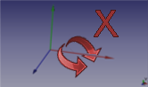

|
| Description |
|---|
| This macro can rotate the screen in a defined angle and the defined axis and creates a plan to face the screen. |
| Author |
| Mario52 |
| Links |
| Macros recipes How to install macros How to customize toolbars |
| Version |
| 0.7 |
| Date last modification |
| 2018-01-03 |
Description
This macro can rotate the screen in a defined angle and the defined axis and creates a plan to face the screen to create a form in the specified plan positions the selected face facing the screen, to detect the position of the camera, align view to face or to axis, align the object to view.
How to use
Use is easy,

Camera of Axis: The dialog box to enter the rotation value angle in degrees.
Angle rotation Axis in degrees: Select the rotation axis X Y or Z.
Axe of rotation
Virtual
- Detect camera orientation : Detect the camera orientation and print in report view. The returned value is the value provided by the function getCameraOrientation().
Align view to face selected
-
 To Face. : Align the view to the selected face. Click and repeat the click for NormalAt : "(0,0,1) (0,0,-1) (0,1,0) (0,-1,0) (1,0,0) (-1,0,0)"
To Face. : Align the view to the selected face. Click and repeat the click for NormalAt : "(0,0,1) (0,0,-1) (0,1,0) (0,-1,0) (1,0,0) (-1,0,0)"
- To Axis. : Align the view to Axis face selected. Click and repeat the click for Surface Axis : "(0,0,1) (0,0,-1) (0,1,0) (0,-1,0) (1,0,0) (-1,0,0)"
-
 Align object to view. : Align the object selected to the actual view. The changed values are : Rotation Axis((X, Y, Z), Angle) Same Euler angles : Yaw, Pitch, Roll, The Translation is not modify.
Align object to view. : Align the object selected to the actual view. The changed values are : Rotation Axis((X, Y, Z), Angle) Same Euler angles : Yaw, Pitch, Roll, The Translation is not modify.
-
 Create plane of view. : A circular plane is created facing the screen to mouse click coordinates on an object. The radius of the plane is equal to the maximum dimension of BoundBox. If no object is selected, the plane is created to 0, 0, 0 coordinates with a radius of 20 mm. The radius is modifiable to line 515:
Create plane of view. : A circular plane is created facing the screen to mouse click coordinates on an object. The radius of the plane is equal to the maximum dimension of BoundBox. If no object is selected, the plane is created to 0, 0, 0 coordinates with a radius of 20 mm. The radius is modifiable to line 515:
rayon = 20 # Radius of plane
 Reset. : Reset all values.
Reset. : Reset all values.-
 Photo. : Section save the screen rotation an image in angle value
Photo. : Section save the screen rotation an image in angle value - Quit. : Quit FCCamera.
Section Photo
- ComboBox Actual : choice your screen definition for the image format
- Available (pre-defined):
- "Actual" (definition actual of screen)
- "Icon 16 x 16"
- "Icon 32 x 32"
- "Icon 64 x 64"
- "Icon 128 x 128"
- "CGA 320 x 200"
- "QVGA 320 x 240"
- "VGA 640 x 480"
- "SVGA 800 x 600"
- "XGA 1024 x 768"
- "XGA+ 1152 x 864"
- "SXGA 1280 x 1024"
- "SXGA+ 1400 x 1050"
- "UXGA 1600 x 1200"
- "QXGA 2048 x 1536"
- "Free"
- Available (pre-defined):
- SpinBox X and Y
- ComboBox Format image
- Available :
- "BMP *.bmp"
- "ICO *.ico"
- "JPEG *.jpeg"
- "JPG *.jpg"
- "PNG *.png" (by default)
- "PPM *.ppm"
- "TIF *.tif"
- "TIFF *.tiff"
- "XBM *.xbm"
- "XPM *.xpm"
- Available :
- Line 1 : Number image calculated by the angle give (ex: angle 60 degrees = 360 (complete rotation) / 60 (angle) = 6 images
- Line 2 : The definition of screen used
- Background image :
- Actual : save image with the screen colour actual
- White : save image with the screen colour white
- Black : save image with the screen colour black
- Launch : Open the file window , give the name and the path
- Reset : Reset the default value
- Return : Quit the photo panel and return to FCCamera panel
Icons
Download the file image and copy in your macro repertory.
Click the image, in the new window position the mouse over the image, click the right mouse and do "Save target as ..."
The path of icons is displayed in the View report
ex: Path locality to FCCamera.....images.png [ C:\Users\xx\AppData\Roaming\FreeCAD\ ]
You can change the path by changing the path in the line 165
Icons program :

How copy the icons in your macros directory.


Icons tableau :



Links
Related Links with FCCamera
Macro Rotate View, Macro Align Object to View, Macro Align Face Object to View, Macro WorkFeatures
Discussion Forum MACRO:Work Feature 2014_12
Script
Download the macro to Gist Macro FCCamera.FCMacro
Examples
How to place an angle hole

Create your object


Select your cylinder for create your hole
In FCCamera click the button
Align Object to View

The cylinder moves to 15 degrees (take the camera position)
do your Boolean operation
Your hole 15 degrees

{kind=link}
{kind=link}
{kind=link}
{kind=link}
{kind=link}
{kind=link}
{kind=link}
The same result can be achieved by creating a plan in the corner gave the mouse click position and a sketch.
Example placement spring to face axis
{kind=link}
Version
- ver 07 (03/01/2018): add photo panel and rotation to axis selected (wire, edge, line )
- ver 0.6 (13/12/2016): new system for search the macro path directly in the preferences
#path = FreeCAD.ConfigGet("AppHomePath")
#path = FreeCAD.ConfigGet("UserAppData")
#path = "your path"
param = FreeCAD.ParamGet("User parameter:BaseApp/Preferences/Macro")# macro path
path = param.GetString("MacroPath","") + "/" # macro path
path = path.replace("\\","/")
App.Console.PrintMessage("Path locality to FCCamera.....images.png [ " + path + " ]"+"\n")
- ver 0.5 06/09/2016: correct name "FCCamera_Axis_rotation_X.png" in reset block
- ver 0.4 28/02/2016 : add display all camera detection and the Direction
- ver 0.3 18/03/2015 : modify line 492 replace "pl.Base = App.Vector(0,0,0)" to "pl.Base = sel[0].Placement.Base" now no longer moves the form at point (0,0,0) and leaves has the coordinates
- ver 0.2 25/02/2015 : correct names files in for compatibility Linux (case sensitive) thanks microelly2